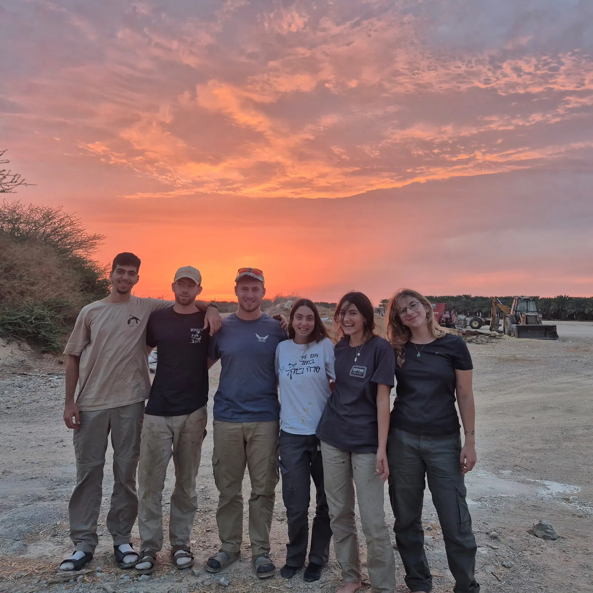
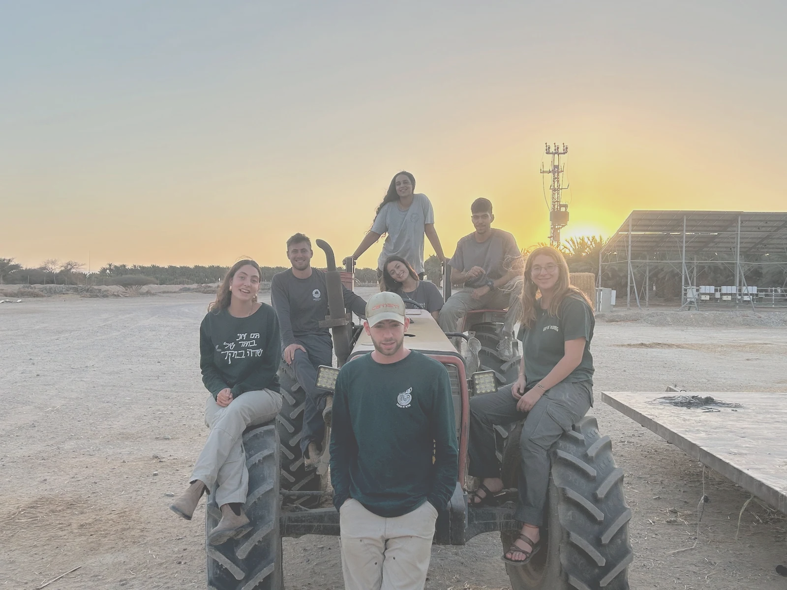

שנת שירות ברוח ערבה
כתף אל כתף. בשדה, במסע ובדרך. שנה של עשייה חינוכית, עבודה חקלאית, חיי קבוצה ושליחות בלב הערבה.
כתף אל כתף
במכינת "ניר בערבה", מסגרת קדם-צבאית חינוכית-טיפולית לבוגרי חסות הנוער, אנו מאמינים שקשר משמעותי נבנה מתוך עשייה משותפת. מתנדבי ומתנדבות שנת השירות פועלים כתף אל כתף עם חניכי המכינה: בעבודה במשק ובחווה ובאתגרי היומיום. הם קמים יחד בבוקר, עובדים יחד, מתמודדים עם קשיים וחולקים רגעי הצלחה.
מתוך העשייה המשותפת נבנים קשרים של אמון, שייכות ומחויבות הדדית. הש"שינים אינם רק מתנדבים במסגרת, הם שותפים לדרך. בנוכחותם היומיומית ובדוגמה האישית שלהם הם עוזרים ליצור מרחב שבו כל אדם יכול לגלות את כוחותיו ולצמוח.

אחריות שמצמיחה מנהיגות
העבודה החקלאית היא לב שנת השירות. בשיתוף משק עפאים וחוות בין השיטין, הש"שינים לוקחים חלק בעבודה, בחלוקת המשימות ובהובלת העשייה המשותפת עם המכיניסטים, בליווי הצוות המקצועי: דיר העיזים, לולי החופש האורגניים, חממות הירקות ומטעי הליצ'י והמנגו. זו עבודה חקלאית אמיתית, שדורשת התמדה, עצמאות, יוזמה ויכולת להתמודד עם אתגרים. כאן לומדים שמנהיגות נמדדת בעיקר במעשים.
חיים משותפים וצמיחה הדדית
שנת השירות היא גם מסע אישי וקבוצתי של המתנדבים עצמם. החיים בקומונה בלב הערבה, האחריות המשותפת, המפגש עם חניכי המכינה וההשתלבות בקהילה יוצרים מרחב של חברות, עצמאות, למידה והתפתחות. זו שנה שמלמדת שלפעמים הדרך הטובה ביותר להשפיע היא פשוט להיות שם: לקום יחד, לעבוד יחד, ללכת יחד, ולא לוותר זה על זה.
רוצים להצטרף לשנת השירות ברוח ערבה?
מחפשים שנה של עבודה חקלאית אמיתית, חיים בקומונה, אחריות ועשייה חינוכית משמעותית? אנחנו מזמינים אתכם להצטרף אלינו לערבה.